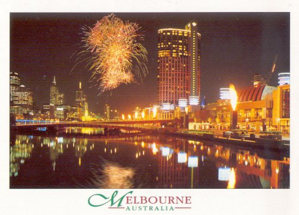
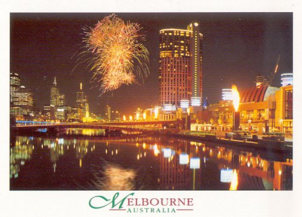

2000년 호주 멜번에서....
멜번은 약 9개월동안 머물며 공부한 곳이다.
정말 살기 좋은 도시이다.
1990년대 초와 현대가 공존하는 듯한 느낌의 친절하고 깨끗하고 여유 넘치는 도시...


멜번은 약 9개월동안 머물며 공부한 곳이다.
정말 살기 좋은 도시이다.
1990년대 초와 현대가 공존하는 듯한 느낌의 친절하고 깨끗하고 여유 넘치는 도시...
